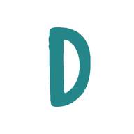

<!doctype html>
<html lang="es">
<head>
<meta charset="utf-8">
<meta name="viewport" content="width=device-width, initial-scale=1, viewport-fit=cover">
<meta name="theme-color" content="#0B4F4A">
<link rel="manifest" href="manifest.webmanifest">
<link rel="icon" type="image/png" href="favicon.png">
<meta name="description" content="Sistema del consultorio Dentaly: agenda, expedientes, cobros y material.">
<meta name="robots" content="noindex, nofollow">
<meta name="application-name" content="Dentaly">
<meta name="format-detection" content="telephone=no">
<!-- Tarjeta al compartir la liga (WhatsApp, Facebook, etc.) -->
<meta property="og:type" content="website">
<meta property="og:site_name" content="Dentaly">
<meta property="og:title" content="Dentaly · Sistema del consultorio">
<meta property="og:description" content="Agenda, expedientes, cobros y material del consultorio Dentaly.">
<meta property="og:url" content="https://elernest99.github.io/dentaly/">
<meta property="og:image" content="https://elernest99.github.io/dentaly/og-image.png">
<meta property="og:image:width" content="1200">
<meta property="og:image:height" content="630">
<meta property="og:locale" content="es_MX">
<meta name="twitter:card" content="summary_large_image">
<link rel="apple-touch-icon" href="apple-touch-icon.png">
<meta name="apple-mobile-web-app-capable" content="yes">
<meta name="mobile-web-app-capable" content="yes">
<meta name="apple-mobile-web-app-title" content="Dentaly">
<meta name="apple-mobile-web-app-status-bar-style" content="default">
<title>Dentaly</title>
<style>
  :root { --verde:#0B4F4A; --fondo:#F6F8F7; --naranja:#B45309; }
  html, body { margin:0; height:100%; background:var(--fondo); font-family: Arial, Helvetica, sans-serif; }
  iframe { position:fixed; inset:0; width:100%; height:100%; border:0; background:var(--fondo); }
  .pantalla { position:fixed; inset:0; display:flex; align-items:center; justify-content:center; padding:20px; box-sizing:border-box; }
  .caja { background:#fff; border:1px solid #E3ECE9; border-radius:22px; padding:26px 20px; width:100%; max-width:340px; text-align:center; box-shadow:0 10px 28px rgba(11,79,74,.12); }
  .caja img { width:72px; height:72px; border-radius:18px; }
  h1 { color:var(--verde); font-size:20px; margin:10px 0 4px; }
  p { color:#717171; font-size:13px; margin:0 0 16px; }
  input { font-size:22px; letter-spacing:6px; text-align:center; width:100%; box-sizing:border-box; padding:12px; border:1px solid #CBDDD8; border-radius:14px; background:#F7F7F7; outline:none; }
  .ops { display:flex; gap:8px; margin:14px 0 4px; }
  .ops button { flex:1; padding:12px 6px; border-radius:14px; border:1px solid #CBDDD8; background:#fff; color:var(--verde); font-weight:700; font-size:14px; }
  .ops button.on { background:var(--verde); color:#fff; border-color:var(--verde); }
  .go { width:100%; margin-top:12px; padding:14px; border:none; border-radius:999px; background:var(--naranja); color:#fff; font-size:16px; font-weight:800; }
  .cargando { position:fixed; inset:0; display:flex; flex-direction:column; align-items:center; justify-content:center; gap:12px; color:var(--verde); font-weight:700; background:var(--fondo); transition:opacity .3s; }
  .ios { text-align:left; background:#FFF7ED; border:1px solid #FED7AA; color:#7C2D12; border-radius:14px; padding:10px 12px; font-size:13px; line-height:1.45; margin:0 0 14px; }
  .ios b { color:#7C2D12; }
  .cargando img { width:84px; height:84px; border-radius:22px; }
</style>
</head>
<body>
<script>
/* DENTALY COMO APP. Este archivo "abre" el sistema de Apps Script en
   pantalla completa y en su propia ventana. El PIN se queda solo en ESTE teléfono.
   ⚡ (2026-11-05) También guarda EN ESTE TELÉFONO una copia de las pantallas que se abren
   (inicio, agenda, fichas del día, material) para que abran al instante y se puedan ver
   sin internet. Lo de Material que se registre sin internet se manda al regresar la señal. */
var SISTEMA = 'https://script.google.com/macros/s/AKfycbwExKBacg6rF_7T1fQddk8YhgOCHolOXoD2JGw13KIHwdKGHHvWK9pzbGlMj1mmb9Wchw/exec';
var K_PIN = 'dentaly_app_pin', K_INICIO = 'dentaly_app_inicio';
function lsG(k){ try { return localStorage.getItem(k) || ''; } catch(e){ return ''; } }
function lsS(k, v){ try { localStorage.setItem(k, v); } catch(e){} }

/* Ligas directas: https://elernest99.github.io/dentaly/?caja=DX-065 (o ?id=,
   ?orden=, ?fecha=...) abren ESA pantalla dentro de la app. En Android, si la
   app está instalada, el teléfono abre estas ligas en la app y no en Chrome. */
var HREF0 = location.href;   // la liga con la que se abrió (antes de limpiarla)
/* 🛡 (2026-11-05) ¿Es una visita NUEVA (se escaneó el QR) o la página se volvió a cargar sola?
   Recargar, regresar, una pestaña que el navegador restaura o una sugerencia que Chrome
   "precarga" al tocar la barra de direcciones NO son un escaneo: el material se abre solo
   para verlo (ver=1) y no se descuenta nada. */
function visitaNueva(){
  try { if (document.prerendering || VINO_DE_PRECARGA) return false; } catch(e){}
  try { var n = performance.getEntriesByType('navigation')[0]; if (n && n.type && n.type !== 'navigate') return false; } catch(e){}
  try { if (performance.navigation && performance.navigation.type !== 0) return false; } catch(e){}
  return true;
}
var VINO_DE_PRECARGA = false;
try { if (document.prerendering) VINO_DE_PRECARGA = true; } catch(e){}
function destinoDeLiga(){
  var q = (location.search || '').replace(/^\?/, '');
  if (!q) return '';
  var partes = q.split('&').filter(function(kv){
    var k = kv.split('=')[0];
    return k && k !== 'config' && k !== 'pin';
  });
  var esMaterial = partes.some(function(kv){ return kv.split('=')[0] === 'inv'; });
  if (esMaterial && !visitaNueva() && partes.indexOf('ver=1') === -1) partes.push('ver=1');
  return partes.join('&');
}
/* La dirección se limpia después de abrir: así, si la pestaña se recarga o la liga queda en el
   historial del navegador, ya no trae el material (?inv=…) y no puede volver a registrar una salida. */
function limpiarDireccion(){
  try { if (location.search && location.search.indexOf('config') === -1) history.replaceState(null, '', location.pathname); } catch(e){}
}

/* REGRESAR DONDE ESTABA (2026-10-28): el sistema avisa en qué pantalla va
   (ficha, agenda, menú…). Si el teléfono cerró la app para ahorrar memoria,
   al abrirla de nuevo regresa ahí mismo (si fue en las últimas 8 horas).
   La agenda siempre abre en HOY. */
var K_ULT = 'dentaly_app_ultimo', K_FEC = 'dentaly_app_dia';
window.addEventListener('message', function(e){
  var d = e && e.data;
  if (!d || !d.dentalyPos || typeof d.dentalyPos !== 'object') return;
  var p = {}, src = d.dentalyPos;
  Object.keys(src).forEach(function(k){ if (['pin', 'accion', 'pac', 'fecha', 'mi'].indexOf(k) === -1) p[k] = String(src[k]); });
  lsS(K_ULT, JSON.stringify({ p: p, t: Date.now() }));
  // Día que se está viendo en la agenda: si se RECARGA pronto (30 min), regresa a ese día.
  if (d.dentalyFecha && /^\d{4}-\d{2}-\d{2}$/.test(String(d.dentalyFecha))) lsS(K_FEC, JSON.stringify({ f: String(d.dentalyFecha), t: Date.now() }));
});
/* 🔔 AVISOS DE TAREAS (2026-10-30): la agenda (con el PIN de recepción) manda
   "dentalyAviso" y aquí se convierte en notificación del teléfono o de Windows,
   aunque esté en otra ventana. Primero hay que activarlos con el botón 🔔. */
function botonAvisos(){
  if (!('Notification' in window) || Notification.permission !== 'default' || document.getElementById('btnAvisos')) return;
  var b = document.createElement('button');
  b.id = 'btnAvisos'; b.textContent = '🔔 Activar avisos';
  b.style.cssText = 'position:fixed;right:12px;bottom:150px;z-index:99;background:#5B21B6;color:#fff;border:none;border-radius:999px;padding:12px 16px;font:800 14px Arial,sans-serif;box-shadow:0 4px 14px rgba(0,0,0,.3);';
  b.onclick = function(){ Notification.requestPermission().then(function(){ b.remove(); }); };
  document.body.appendChild(b);
}
function notificar(t){
  if (!('Notification' in window) || Notification.permission !== 'granted') return;
  var op = { body: t.texto || '', tag: t.tag || 'dentaly', renotify: true, requireInteraction: true, vibrate: [300, 150, 300], icon: 'icon-192.png', badge: 'icon-192.png' };
  if (navigator.serviceWorker && navigator.serviceWorker.ready) navigator.serviceWorker.ready.then(function(r){ r.showNotification(t.titulo || 'Dentaly', op); }).catch(function(){ try { new Notification(t.titulo || 'Dentaly', op); } catch(e){} });
  else { try { new Notification(t.titulo || 'Dentaly', op); } catch(e){} }
}
window.addEventListener('message', function(e){
  var d = e && e.data; if (!d) return;
  if (d.dentalyQuiereAvisos) botonAvisos();
  if (d.dentalyAviso) notificar(d.dentalyAviso);
});
/* 🔔 AVISO "SIGUIENTE PACIENTE" (2026-11-06): para las doctoras. Llega aunque la app esté cerrada (Web Push).
   En iPhone solo funciona con la app instalada en la pantalla de inicio (iOS 16.4 o más nuevo). */
var PUSH_KEY = 'BHO0x8sV9whi0SMCmIejjrKd2m1yjecRh1_wDVGVDjadDmKBxoUm7O3MtY4WzDfZRGutflhDX3iPF-Mf_ghByKE';
function pushListo(){ return 'serviceWorker' in navigator && 'PushManager' in window && 'Notification' in window; }
function b64uBytes(t){ t = String(t).replace(/-/g, '+').replace(/_/g, '/'); while (t.length % 4) t += '='; var r = atob(t), u = new Uint8Array(r.length); for (var i = 0; i < r.length; i++) u[i] = r.charCodeAt(i); return u; }
function pushSuscribir(src, conBoton){
  navigator.serviceWorker.ready.then(function(reg){
    return reg.pushManager.getSubscription().then(function(s){ return s || reg.pushManager.subscribe({ userVisibleOnly: true, applicationServerKey: b64uBytes(PUSH_KEY) }); });
  }).then(function(sub){ try { src.postMessage({ dentalyPushSub: JSON.parse(JSON.stringify(sub)), nuevo: !!conBoton }, '*'); } catch(e){} })
    .catch(function(er){ if (conBoton) alert('No se pudieron activar los avisos: ' + (er && er.message ? er.message : er)); });
}
function botonPush(src, doctor){
  if (document.getElementById('btnPush')) return;
  var b = document.createElement('button');
  b.id = 'btnPush'; b.textContent = '🔔 Avisarme de mi siguiente paciente';
  b.style.cssText = 'position:fixed;left:50%;transform:translateX(-50%);bottom:calc(18px + env(safe-area-inset-bottom));z-index:99;background:#0B4F4A;color:#fff;border:none;border-radius:999px;padding:13px 18px;font:800 14px Arial,sans-serif;box-shadow:0 6px 18px rgba(0,0,0,.3);white-space:nowrap;';
  var x = document.createElement('span'); x.textContent = '  ✕'; x.style.cssText = 'opacity:.7;margin-left:6px;';
  x.onclick = function(ev){ ev.stopPropagation(); b.remove(); lsS('dentaly_push_no', String(Date.now())); };
  b.appendChild(x);
  b.onclick = function(){ Notification.requestPermission().then(function(p){ b.remove(); if (p === 'granted') pushSuscribir(src, true); }); };
  document.body.appendChild(b);
}
window.addEventListener('message', function(e){
  var d = e && e.data; if (!d) return;
  if (d.dentalyQuierePush && pushListo()) {
    if (Notification.permission === 'granted') pushSuscribir(e.source, false);   // ya aceptó: se mantiene al día (sin preguntar)
    else if (Notification.permission === 'default' && Date.now() - Number(lsG('dentaly_push_no') || 0) > 3 * 864e5) botonPush(e.source, d.dentalyQuierePush.doctor);
  }
  if (d.dentalyPushId) {
    try { caches.open('dentaly-cfg').then(function(c){ return c.put('aviso-id', new Response(String(d.dentalyPushId))); }); } catch(er){}
  }
});

/* ═══ ⚡ COPIAS EN EL TELÉFONO (IndexedDB) ═══ */
var DB = null, DB_CB = [];
(function(){ try { var r = indexedDB.open('dentaly', 1); r.onupgradeneeded = function(){ var d = r.result; ['snap', 'resp', 'cola'].forEach(function(n){ if (!d.objectStoreNames.contains(n)) d.createObjectStore(n, n === 'cola' ? { keyPath: 'id', autoIncrement: true } : undefined); }); };
  r.onsuccess = function(){ DB = r.result; DB_CB.splice(0).forEach(function(f){ f(); }); }; r.onerror = function(){ DB_CB.splice(0).forEach(function(f){ f(); }); }; } catch(e){} })();
function conDB(f){ if (DB) f(); else DB_CB.push(f); setTimeout(function(){ var i = DB_CB.indexOf(f); if (i !== -1) { DB_CB.splice(i, 1); f(); } }, 1500); }
function dbGet(st, k, cb){ conDB(function(){ if (!DB) { cb(null); return; } try { var q = DB.transaction(st).objectStore(st).get(k); q.onsuccess = function(){ cb(q.result || null); }; q.onerror = function(){ cb(null); }; } catch(e){ cb(null); } }); }
function dbPut(st, k, v){ conDB(function(){ if (!DB) return; try { var os = DB.transaction(st, 'readwrite').objectStore(st); if (k === null) os.add(v); else os.put(v, k); } catch(e){} }); }
function dbDel(st, k){ conDB(function(){ if (!DB) return; try { DB.transaction(st, 'readwrite').objectStore(st).delete(k); } catch(e){} }); }
function dbTodos(st, cb){ conDB(function(){ if (!DB) { cb([]); return; } try { var q = DB.transaction(st).objectStore(st).getAll(); q.onsuccess = function(){ cb(q.result || []); }; q.onerror = function(){ cb([]); }; } catch(e){ cb([]); } }); }
function paramsDe(q){ var p = {}; String(q || '').replace(/^[?]/, '').split('&').forEach(function(kv){ if (!kv) return; var i = kv.indexOf('='); var k = decodeURIComponent((i === -1 ? kv : kv.slice(0, i)).replace(/[+]/g, ' ')); if (k) p[k] = i === -1 ? '' : decodeURIComponent(kv.slice(i + 1).replace(/[+]/g, ' ')); }); return p; }
// Igual que en el sistema: qué pantalla es cada liga.
function claveDe(p){
  if (p.id) return 'f:' + p.id; if (p.agenda) return 'agenda'; if (p.rxsubir) return 'rx'; if (p.mi) return 'mi:' + p.mi + (p.mes ? ':' + p.mes : '');
  if (p.caja) return 'caja:' + p.caja; if ('inv' in p) return 'inv:' + p.inv; if ('banco' in p) return 'banco'; if ('fact' in p) return 'fact'; if ('pedido' in p) return 'pedido'; if (p.ultimo === 'etiquetas') return 'ultimo'; if ('etiquetas' in p) return 'etiquetas'; if ('inventario' in p) return 'inventario';
  if (p.orden) return 'orden:' + p.orden; if (p.accion || p.pac) return 'home:x'; return 'home';
}
function llaveSnap(k){ return lsG(K_PIN) + '|' + k; }
var K_IDX = 'dentaly_snaps';
function snapIndice(){ try { return JSON.parse(lsG(K_IDX) || '{}'); } catch(e){ return {}; } }
function snapGuardar(k, html, t){
  var idx = snapIndice(), ll = llaveSnap(k); idx[ll] = t || Date.now(); dbPut('snap', ll, { html: html, t: t || Date.now() });
  var ks = Object.keys(idx).sort(function(a, b){ return idx[a] - idx[b]; });
  while (ks.length > 60) { var v = ks.shift(); delete idx[v]; dbDel('snap', v); }   // máximo 60 pantallas guardadas
  lsS(K_IDX, JSON.stringify(idx));
}
var SISTEMA_LISTO = false;
window.addEventListener('message', function(e){
  var d = e && e.data; if (!d) return;
  if (d.dentalySnap && d.dentalySnap.k && d.dentalySnap.html) snapGuardar(d.dentalySnap.k, d.dentalySnap.html, d.dentalySnap.t);
  if (d.dentalySnapPide && e.source) { var q = d.dentalySnapPide; dbGet('snap', llaveSnap(q.k), function(r){ try { e.source.postMessage({ dentalySnapResp: { id: q.id, html: r ? r.html : '', t: r ? r.t : 0 } }, '*'); } catch(er){} }); }
  if (d.dentalyResp && d.dentalyResp.fn) dbPut('resp', lsG(K_PIN) + '|' + d.dentalyResp.fn + '|' + d.dentalyResp.a, { r: d.dentalyResp.r, t: d.dentalyResp.t });
  if (d.dentalyListo && e.source) {
    SISTEMA_LISTO = true; quitarAvisoLento(); quitarPrevia();
    try { e.source.postMessage({ dentalyAppV: 2 }, '*'); } catch(er){}
    dbTodos('cola', function(l){ if (l.length) try { e.source.postMessage({ dentalyCola: l }, '*'); } catch(er){} });   // lo guardado sin internet
  }
  if (d.dentalyColaHecha) d.dentalyColaHecha.forEach(function(id){ dbDel('cola', id); });
});

/* 📴 SIN INTERNET: se muestran las copias guardadas (solo para ver). Material sí registra: se guarda aquí
   y se manda solo al regresar la señal. */
var COLA_OK = { apiInvSalida: 1, apiInvEntrada: 1, apiInvConteo: 1, apiInvCaducidad: 1, apiInvProveedor: 1, apiInvContenido: 1 };
var OFF = false;
function horaDe(t){ var d = new Date(t); return d.getHours() + ':' + ('0' + d.getMinutes()).slice(-2); }
function avisoOff(t){ var b = document.getElementById('offBar'); if (!b) { b = document.createElement('div'); b.id = 'offBar'; b.style.cssText = 'position:fixed;left:50%;bottom:14px;transform:translateX(-50%);z-index:50;background:#7C2D12;color:#fff;border-radius:999px;padding:9px 14px;font:700 12.5px Arial,sans-serif;box-shadow:0 6px 18px rgba(0,0,0,.3);max-width:92%;text-align:center;'; document.body.appendChild(b); } b.textContent = t; }
function corredorOff(st){
  return new Proxy({}, { get: function(o, name){
    if (name === 'withSuccessHandler') return function(f){ return corredorOff({ ok: f, mal: st.mal, uo: st.uo }); };
    if (name === 'withFailureHandler') return function(f){ return corredorOff({ ok: st.ok, mal: f, uo: st.uo }); };
    if (name === 'withUserObject') return function(u){ return corredorOff({ ok: st.ok, mal: st.mal, uo: u }); };
    if (typeof name !== 'string' || name === 'then') return undefined;
    return function(){
      var args = Array.prototype.slice.call(arguments), fn = name;
      if (COLA_OK[fn]) { dbPut('cola', null, { fn: fn, args: args, t: Date.now() }); setTimeout(function(){ if (st.ok) st.ok({ ok: true, row: 0, offline: true }, st.uo); }, 30); avisoOff('📴 Sin internet · guardado en el teléfono, se manda al regresar la señal'); return; }
      dbGet('resp', lsG(K_PIN) + '|' + fn + '|' + JSON.stringify(args), function(r){
        if (r) { if (st.ok) st.ok(r.r, st.uo); }
        else if (st.mal) st.mal(new Error('📴 Sin internet: esto se puede hacer cuando regrese la señal.'), st.uo);
      });
    };
  } });
}
function prepararOff(){
  window.google = { script: { run: corredorOff({}), history: { push: function(){}, replace: function(){}, setChangeHandler: function(){} }, url: { getLocation: function(cb){ if (cb) cb({ parameter: {}, parameters: {}, hash: '' }); } }, host: { close: function(){}, setHeight: function(){}, setWidth: function(){}, editor: { focus: function(){} } } } };
  window.appRun = function(){ return corredorOff({}); };
  window.appPrefetch = function(){};
  window.appEsInterna = function(h){ h = String(h || ''); return !!h && (h.charAt(0) === '?' || h.indexOf(SISTEMA) === 0 || /script[.]google[.]com[/](a[/][^/]+[/])?macros[/]s[/][^/?]+[/](exec|dev)/.test(h)); };
  window.appIr = function(u){
    if (typeof u === 'string' && !appEsInterna(u)) { window.open(u, '_blank'); return; }
    var p = typeof u === 'string' ? paramsDe(u.indexOf('?') === -1 ? '' : u.slice(u.indexOf('?'))) : (u || {});
    verCopia(claveDe(p), true);
  };
}
function verCopia(k, avisarSiNo){
  dbGet('snap', llaveSnap(k), function(r){
    if (!r && k.indexOf('inv:') === 0 && k !== 'inv:') { verCopia('inv:', avisarSiNo); return; }
    if (!r) { if (avisarSiNo) avisoOff('📴 Esa pantalla no está guardada en este teléfono (ábrela una vez con internet)'); else if (k !== 'agenda') verCopia('agenda', false); else verCopia('home', false); return; }
    var f = document.getElementById('marcoOff');
    if (!f) { document.body.innerHTML = ''; f = document.createElement('iframe'); f.id = 'marcoOff'; f.allow = 'camera; clipboard-read; clipboard-write'; document.body.appendChild(f); }
    f.srcdoc = r.html;
    avisoOff('📴 Sin internet · copia de las ' + horaDe(r.t) + ' · solo para ver (Material sí registra)');
  });
}
/* ⚡ VISTA PREVIA (2026-11-05): mientras Google contesta, se muestra YA la última copia de la pantalla
   (se puede leer). Los toques esperan un segundo a que el sistema esté listo; luego se quita sola. */
function vistaPrevia(k){
  dbGet('snap', llaveSnap(k), function(r){
    if (!r || SISTEMA_LISTO || document.getElementById('previa')) return;
    prepararOff();
    var f = document.createElement('iframe'); f.id = 'previa'; f.srcdoc = r.html; f.style.zIndex = '5';
    var t = document.createElement('div'); t.id = 'tapa';
    t.style.cssText = 'position:fixed;inset:0;z-index:6;background:transparent;';
    t.innerHTML = '<div id="tapaChip" style="position:fixed;top:8px;left:50%;transform:translateX(-50%);background:#0B4F4A;color:#fff;border-radius:999px;padding:7px 13px;font:700 12.5px Arial,sans-serif;box-shadow:0 4px 14px rgba(0,0,0,.25);">⏳ Conectando…</div>';
    t.onclick = function(){ var c = document.getElementById('tapaChip'); if (c) c.textContent = '⏳ Un segundo, conectando…'; };
    document.body.appendChild(f); document.body.appendChild(t);
    var c = document.getElementById('carga'); if (c) c.remove();
  });
}
function quitarPrevia(){ setTimeout(function(){ ['previa', 'tapa'].forEach(function(id){ var x = document.getElementById(id); if (x) x.remove(); }); }, 450); }
function modoSinInternet(k){ OFF = true; prepararOff(); verCopia(k || 'agenda', false); }
window.addEventListener('online', function(){ if (OFF) { OFF = false; location.reload(); } });
// Si el sistema no responde (internet muy lento o caído), se ofrece ver la copia.
var T_LENTO = null;
function quitarAvisoLento(){ clearTimeout(T_LENTO); var b = document.getElementById('btnOff'); if (b) b.remove(); }
function vigilarLento(k){
  T_LENTO = setTimeout(function(){
    if (SISTEMA_LISTO) return;
    dbGet('snap', llaveSnap(k), function(r){
      if (!r && !snapIndice()[llaveSnap('agenda')]) return;
      var b = document.createElement('button'); b.id = 'btnOff'; b.textContent = '📴 Tarda mucho · ver la copia guardada';
      b.style.cssText = 'position:fixed;left:50%;bottom:18px;transform:translateX(-50%);z-index:60;background:#7C2D12;color:#fff;border:none;border-radius:999px;padding:12px 16px;font:800 14px Arial,sans-serif;box-shadow:0 6px 18px rgba(0,0,0,.3);';
      b.onclick = function(){ modoSinInternet(k); };
      document.body.appendChild(b);
    });
  }, 12000);
}

function ultimoLugar(){
  try {
    var u = JSON.parse(lsG(K_ULT) || 'null');
    if (!u || Date.now() - u.t > 8 * 3600000) return '';
    var q = Object.keys(u.p).map(function(k){ return encodeURIComponent(k) + '=' + encodeURIComponent(u.p[k]); }).join('&');
    // Recargar = seguir en el mismo día de la agenda (si fue hace menos de 30 min; si no, abre en hoy).
    try { var fd = JSON.parse(lsG(K_FEC) || 'null'); if (u.p.agenda && fd && Date.now() - fd.t < 30 * 60000) q += '&fecha=' + encodeURIComponent(fd.f); } catch(e2){}
    return q;
  } catch (e) { return ''; }
}

function abrir(){
  var pin = lsG(K_PIN), inicio = lsG(K_INICIO) || 'agenda';
  var liga = destinoDeLiga() || ultimoLugar();
  var url = liga
    ? SISTEMA + '?' + liga + '&pin=' + encodeURIComponent(pin)
    : SISTEMA + (inicio === 'agenda' ? '?agenda=1&' : '?') + 'pin=' + encodeURIComponent(pin);
  var k = claveDe(paramsDe(url.slice(url.indexOf('?'))));
  limpiarDireccion();
  if (navigator.onLine === false) { modoSinInternet(k); return; }
  // ⚡ Si esta pantalla ya está guardada, el sistema solo manda el cascarón y la copia sale al instante.
  var esQr = k.indexOf('inv:') === 0 && k !== 'inv:';
  if (!esQr && snapIndice()[llaveSnap(k)]) url += '&shell=1';
  document.body.innerHTML = '<div class="cargando" id="carga"><div>Abriendo Dentaly…</div></div>';
  vigilarLento(k);
  if (!esQr) vistaPrevia(k);
  var f = document.createElement('iframe');
  f.src = url;
  f.allow = 'camera; microphone; clipboard-read; clipboard-write; fullscreen';
  f.onload = function(){ var c = document.getElementById('carga'); if (c) { c.style.opacity = '0'; setTimeout(function(){ c.remove(); }, 300); } };
  document.body.insertBefore(f, document.body.firstChild);
}

// En iPhone: si se abrió desde Safari (no desde el ícono), explica cómo instalarla.
function avisoIphone(){
  var ua = navigator.userAgent || '';
  var ios = /iPhone|iPad|iPod/.test(ua) || (navigator.platform === 'MacIntel' && navigator.maxTouchPoints > 1);
  var instalada = window.navigator.standalone === true || (window.matchMedia && matchMedia('(display-mode: standalone)').matches);
  if (!ios || instalada) return '';
  return '<div class="ios">📲 <b>Para tenerla como app en tu iPhone:</b><br>1. Toca <b>Compartir</b> (el cuadrito con flecha ⬆️).<br>2. Elige <b>“Agregar a inicio”</b> y luego <b>Agregar</b>.<br>3. Abre Dentaly desde el ícono nuevo y escribe ahí tu PIN.</div>';
}

function configurar(){
  var inicio = lsG(K_INICIO) || 'agenda';
  document.body.innerHTML =
    '<div class="pantalla"><div class="caja">' +
    '<h1>Dentaly</h1>' + avisoIphone() + '<p>Escribe <b>tu PIN personal</b> (el mismo de “Mi página”). Se queda guardado en este teléfono y el sistema te reconoce.</p>' +
    '<input id="pin" type="password" inputmode="numeric" maxlength="8" autocomplete="off" placeholder="••••" value="' + lsG(K_PIN).replace(/"/g, '') + '">' +
    '<div class="ops"><button type="button" data-i="agenda">🗓️ Abrir en Agenda</button><button type="button" data-i="menu">🏠 Abrir en Menú</button></div>' +
    '<button class="go" id="go">Entrar</button></div></div>';
  var bs = document.querySelectorAll('.ops button');
  function marcar(){ bs.forEach(function(b){ b.className = b.getAttribute('data-i') === inicio ? 'on' : ''; }); }
  bs.forEach(function(b){ b.onclick = function(){ inicio = b.getAttribute('data-i'); marcar(); }; });
  marcar();
  document.getElementById('go').onclick = function(){
    var p = document.getElementById('pin').value.replace(/\D/g, '');
    if (p.length < 4) { document.getElementById('pin').focus(); return; }
    lsS(K_PIN, p); lsS(K_INICIO, inicio); abrir();
  };
  document.getElementById('pin').onkeydown = function(e){ if (e.key === 'Enter') document.getElementById('go').click(); };
}

// Para cambiar el PIN o la pantalla de inicio: abrir la dirección con ?config
function arrancar(){ if (location.search.indexOf('config') !== -1 || !lsG(K_PIN)) configurar(); else abrir(); }
// Si Chrome la está "precargando" (sugerencia de la barra de direcciones), no se abre nada hasta que de verdad se muestre.
var precargando = false; try { precargando = !!document.prerendering; } catch(e){}
if (precargando) document.addEventListener('prerenderingchange', arrancar, { once: true }); else arrancar();

/* Si la app ya estaba abierta y llega una liga (QR de caja, etc.):
   el manifest dice "navigate-existing", así que el teléfono recarga la app
   CON la liga y abrir() la lleva a esa pantalla. Esto de abajo es el respaldo
   para teléfonos que solo traen la app al frente sin recargar. (2026-10-29:
   antes el QR traía la app al frente pero se quedaba en el calendario.) */
if ('launchQueue' in window) {
  try {
    var URL_ARRANQUE = HREF0;
    window.launchQueue.setConsumer(function(params){
      if (!params || !params.targetURL) return;
      // Si la app se abrió (o recargó) YA con esa liga, abrir() ya la cargó: no se repite.
      if (params.targetURL === URL_ARRANQUE) { URL_ARRANQUE = ''; return; }
      var u = new URL(params.targetURL), q = u.search.replace(/^\?/, '');
      if (!q || q.indexOf('config') !== -1) return;
      var f = document.querySelector('iframe'), pin = lsG(K_PIN);
      var url = SISTEMA + '?' + q.split('&').filter(function(kv){ return kv.split('=')[0] !== 'pin'; }).join('&') + '&pin=' + encodeURIComponent(pin);
      if (f) f.src = url; else abrir();
    });
  } catch (e) {}
}

if ('serviceWorker' in navigator) navigator.serviceWorker.register('sw.js').catch(function(){});
</script>
</body>
</html>
